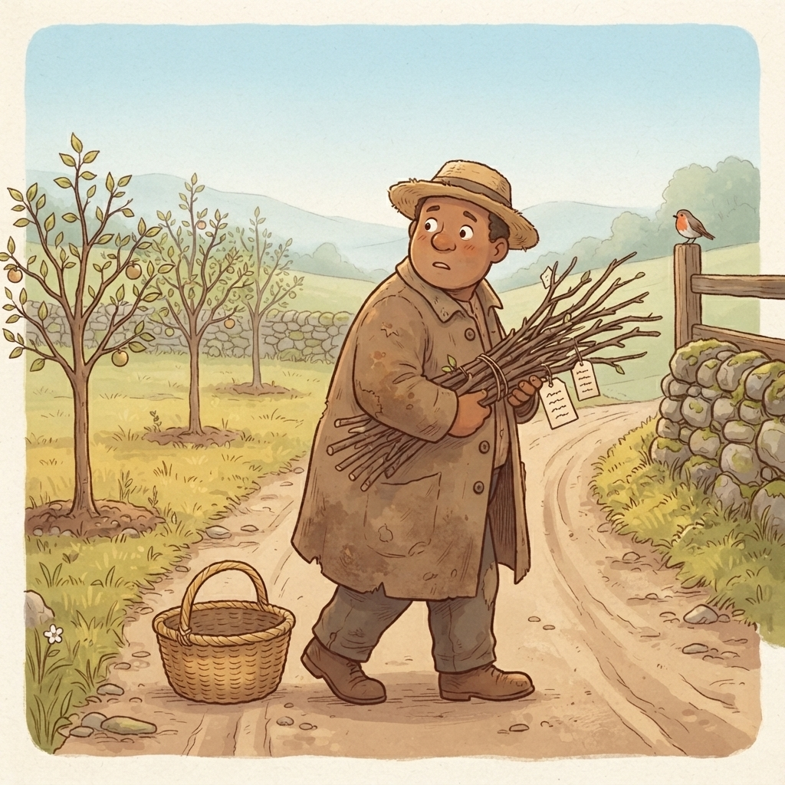

Green frame = the pick used in the game. To swap: python3 .claude/skills/openart-pictures/fetch.py pick story-c4_grafts <version>, then import again.

Warm hand-drawn storybook cartoon illustration for a cosy children's farming game. Soft dark-brown ink outlines (not black), flat colours with gentle cel shading and a light paper texture, a cosy earthy palette of honey yellow, moss green, warm browns, brick red and soft sky blue. Friendly rounded characters with rosy cheeks, simple bright eyes and chunky cute proportions. Old-world countryside setting, no modern objects. Eye-level storybook view, full-bleed square illustration that fills the whole frame edge to edge, no border, no frame, no vignette, no text, no letters, no logos. No collar bells or bells on any animal. Do not show the farmer; no main character in the foreground. Match the drawing style of reference image 1, using it only for the style: paint one single scene that fills the whole frame, not a sheet or a collage. Scene: A country road at the farm edge. Thorne, the Lord's gardener, a round brown man in a brown coat and a straw hat, comes up the road carrying a bundle of thin apple twigs tied with string and small blank paper tags, looking nervously over his shoulder. Behind him a few young apple trees in a row and a stone wall. Every object is a plain ordinary object with no faces: no eyes or smiles on baskets, jars, sacks, tools, lanterns or buildings. No letters or numbers anywhere; any writing is shown only as wavy lines. No people anywhere except those named in the scene, not even tiny ones in the distance or outside a window.